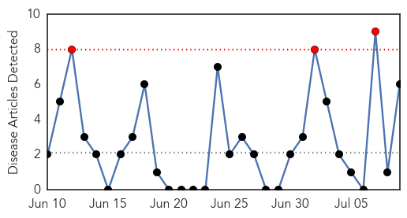
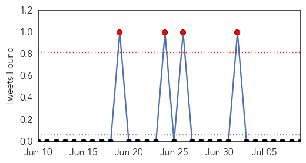
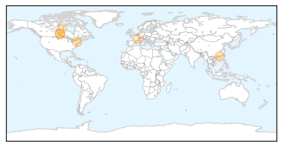
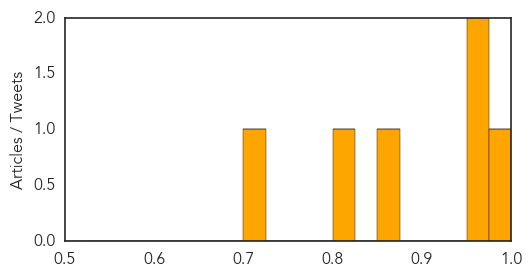
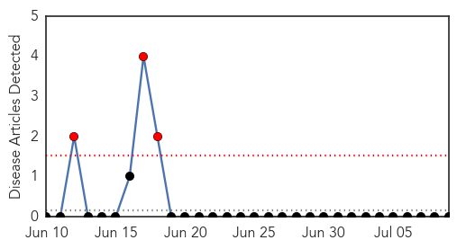

Influenza
30-Day Web Trend
3 alerts, 0 warnings

30-Day Twitter Trend
4 alerts, 0 warnings

Article Locations
Article Confidences
Top Articles:
- 0.995
- Sask. implements flu shot or mask policy for health-care workers
- 0.972
- Here's How Humans Could Create The Next Deadly Pandemic
- 0.952
- Doctors should do more to encourage flu shots during pregnancy: study
- 0.871
- Health care workers to mask or vaccinate in flu season
- 0.816
- Smallpox vials, decades old, found in storage room at NIH campus in Bethesda
- 0.707
- UPDATED: 'Immunize-or-mask' policy coming to Saskatchewan
Top Tweets:
-
No tweets found for Jul 09, 2014
Yellow Fever
30-Day Web Trend
3 alerts, 0 warnings

30-Day Twitter Trend
0 alerts, 0 warnings

Article Locations

Article Confidences

Top Articles:
-
No articles found for Jul 09, 2014
Top Tweets:
-
No tweets found for Jul 09, 2014